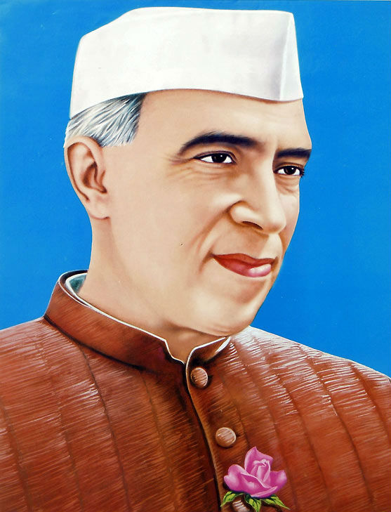
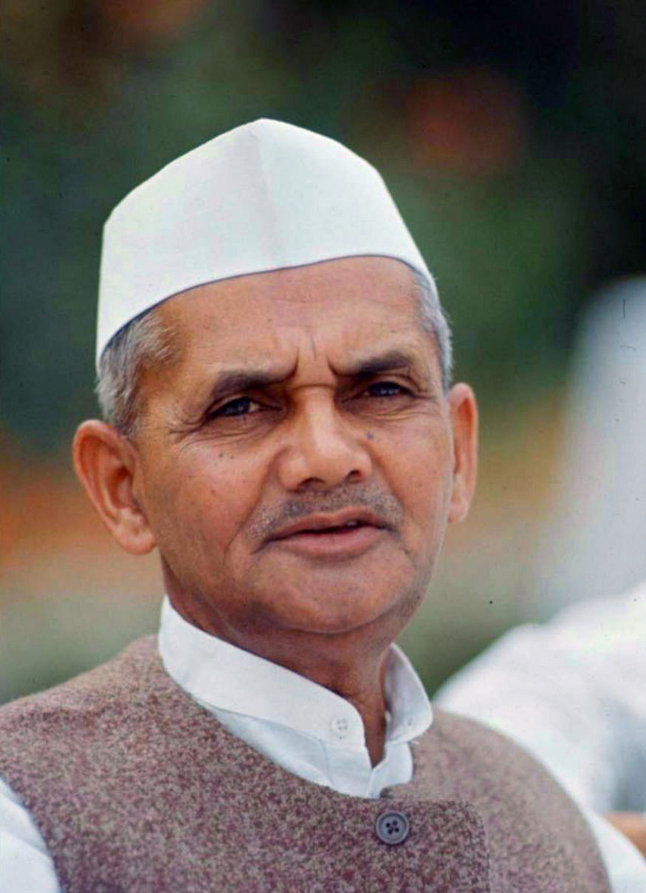
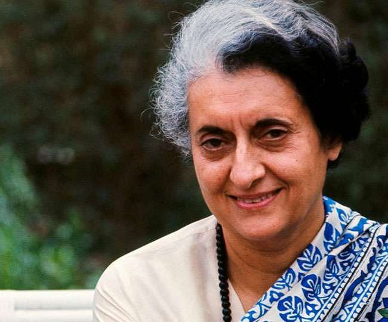
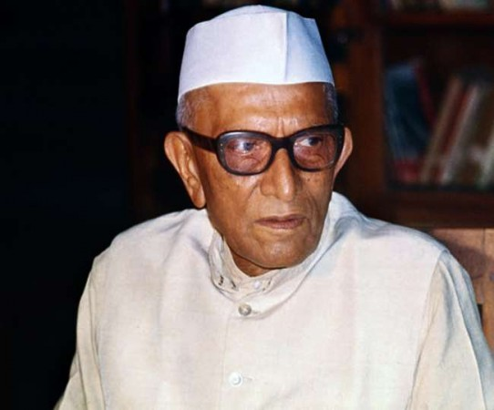
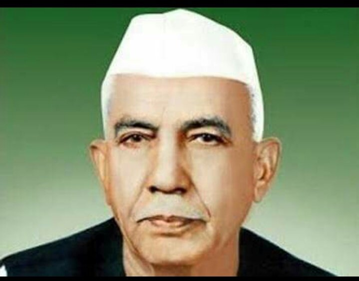

Name :S.Sathvika
Roll No :323103310226
Branch :CSE
Section :4
"HISTORICAL TIME LINE"
PRIME MINISTER FROM 1947-1964

Jawaharlal Nehru served as the first Prime Minister of India from August 15, 1947, until his death on May 27, 1964. His tenure spanned over 16 years, marked by his visionary leadership, commitment to secularism, and promotion of democratic values. Nehru played a pivotal role in shaping India's post-independence policies, focusing on industrialization, education, and social reforms. His emphasis on non-alignment in foreign policy established India as a prominent voice in global affairs. Despite facing challenges, Nehru's legacy endures as a foundational figure in modern India's history.
PRIME MINISTER FROM 1964-1966

Lal Bahadur Shastri, India's second Prime Minister, served from 1964 to 1966. Notable for leading India during the Indo-Pakistani War of 1965, he coined the slogan "Jai Jawan Jai Kisan" (Hail the soldier, Hail the farmer) to boost morale. Shastri aimed to enhance India's self-sufficiency in food production. Tragically, he passed away under mysterious circumstances in Tashkent on January 11, 1966, shortly after signing the Tashkent Agreement to end the war with Pakistan.
INDIRA GANDHI

Indira Gandhi served as the Prime Minister of India:
First Term: January 24, 1966, to March 24, 1977.
Second Term: January 14, 1980, until her assassination on October 31, 1984.
She was the first woman to hold the position of Prime Minister in India and played a significant role in the country's history, overseeing key events such as the Indo-Pakistani War of 1971 and the declaration of a state of emergency in 1975.
PRIME MINISTER FROM 1977-1979

Morarji Desai, India's 4th Prime Minister from 1977 to 1979, was a pivotal figure in the independence movement, advocating fiscal restraint and self-reliance; post-retirement, he ardently championed holistic healing until his passing on April 10, 1995, significantly shaping Indian politics and holistic medicine with his principles.
PRIME MINISTER FROM 1979-1980

Charan Singh was a prominent Indian politician known for championing the rights of farmers. He served as India's Prime Minister for a short period from July 1979 to January 1980. Throughout his career, he focused on agrarian reforms, advocating for farmers' welfare and founding the Bharatiya Lok Dal (BLD) party. His tenure emphasized rural development and land reforms but was relatively brief in the realm of national leadership. He passed away on May 29, 1987.